从头开始多标签文本分类¶
我将使用python 和 scikit-learn，jupyter 笔记本可以在 Github 找到， 以及原始数据集。
数据¶
文本分类是一种受监督的学习技术，因此我们需要一些标记的数据来培训我们的模型。我将使用 数据集 公共新闻分类数据集。这是一个手动标记的新闻文章数据集，适合4个类之一：商业，科技，体育或世界。
这就是数据集的外观：
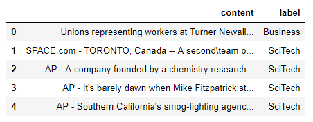
探索性数据分析和文本处理¶
让我们看看我们每个类别有多少篇文章：
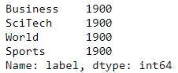
所有的类是完全平衡的，这是你几乎永远不会在野外找到的东西，所以我会采取商业和体育类别的子样本，使其不平衡（即更现实）。我会做1K从业务和800从体育。
我还将从每个类别中拿出 5 篇文章，用于最终的预测，以评估分类器在看不见的数据上的表现，这是真正的测试。
让我们目视检查json文件：
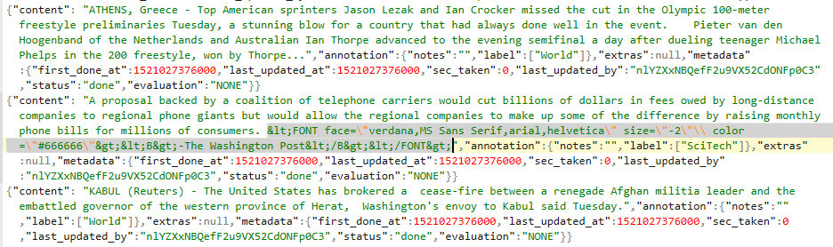
看起来我们有一些html在那里，需要删除。我们将在文本处理步骤中指出这一点。让我们逐类别查看平均字数：
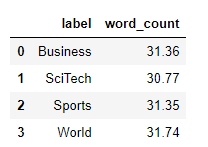
好吧，这些都是绝对短的文章。让我们逐类别查看单词计数分布，看看是否有任何内容：
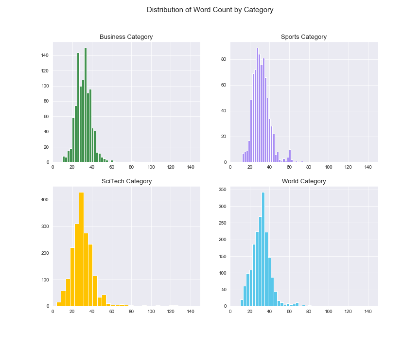
分布对于单词数来说看起来很平稳，并且在类别之间没有什么疯狂的事情在发生，这很好。我想这里的主要挑战将是篇幅较短的文章，尤其是在抽样类别中，但我们将会看到。少于20个单词的文章中没有很多信息，但这就是事实，每个数据集都会给自己带来惊喜，所以让我们一起来看看吧。
接下来，我们将进行文本处理，以便能够查看最常见的单词/二字组合。处理后的文本也将是我们用来创建特征的内容。文本处理非常重要，在这里我将不做详细介绍，因为这更多地是关于分类任务的。简而言之，将对文本进行分词，小写和lemmatized。它将删除标点符号，数字和停用词。
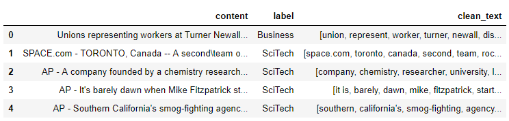
现在，让我们来看看按类别最重要的单词：
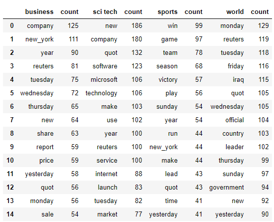
内容之间似乎存在明显差异，所以很好。这些也考虑了二元组（即new york）。N-gram是经常一起出现的单词。双字母组是两个单词（即人工智能），三字母组是三个单词等。单词“ artificial”和“ intelligence”本身的含义与在一起出现时的含义不同。
让我们按类别查看现在的顶级二元组：
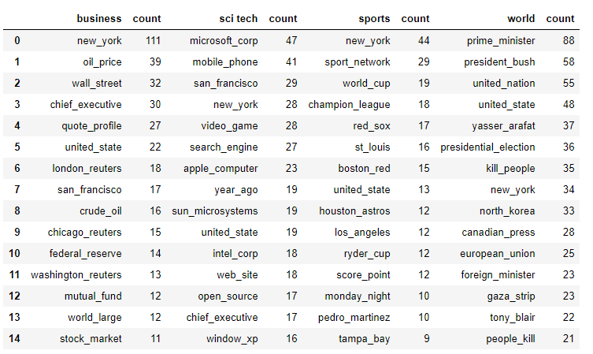
同样，我们在内容上看到了明显的明显差异，并且标签似乎代表了内容是什么。
标签¶
创建带有正确标签的良好标签训练集可以是一个完整的主题，在这里我将不做介绍，以关注分类问题。简而言之，将垃圾放入垃圾中，因此拥有良好的标签很重要，否则您将永远无法获得想要的结果。
这里的标签显然是为我们完成的，因此我们要做的就是将这些文本标签转换为分类器的数字。Scikit-learn的标签编码器对此很有帮助。您也可以使用字典将它们映射，但是如果您有很多类别，可能会变得乏味。
特征¶
我们需要根据文本创建特征。为此，我们需要将单词变成数字，因为机器就像数字一样。将根据处理后的文本（而不是原始文本）创建要素。
有几种方法可以将单词转换为数字，一种方法是仅根据文章的单词数创建一个矩阵。您将为此使用count vectorizer 。另一种方法是使用tf-idf，它代表"术语频率反向文档频率"。这听起来花哨， 但它是相当直截了当的。还有其他的方式，如文字嵌入，所以请随时进行实验。 “词频”是单词在文档中出现的次数除以该文档中单词的总数。“文档反转频率”是文档总数除以单词出现的文档数的对数。 这给了您一个权重，它很好地表明了一个单词对所有文档的重要性。最后一部分很重要，为本文提供文章的上下文。 例如，任何文章都可能包含Rainbow这个词，但是关于Rainbow的Wikipedia文章却包含很多这个词。因此，如果我们要在互联网上的所有文章中寻找关于彩虹的文章当描述彩虹（光，颜色，光谱，双峰等）时，还会出现很多其他经常出现的单词，这将有助于分类。
Sklearn的tf-idf矢量化器还有其他一些有用的功能，特别是“ ngram_range”和“ max / min_df”。我们将使用1、2的ngram_range，它考虑到了单字和二字组。max_df告诉算法忽略出现次数超过阈值设置的单词。我们将其设置为.95，它将忽略出现在所有文档中95％或更多的单词。min_df忽略出现少于阈值的单词。我们将其设置为2，它将忽略仅出现在2个或更少文档中的单词。这将有助于摆脱频繁使用的术语（max_df）和不频繁使用的术语（min_df）。 您可以对tf-idf功能进行网格搜索，就像可以对分类模型的超参数进行网格搜索一样，我建议您这样做。目前，这是一个不错的起点。
降维¶
即使我们删除了停用词并向tf-idf矢量化器应用了阈值，它仍然给我们留下了很多唯一的词（〜15K），其中许多我们可能不需要并且是多余的。因此，我们还要进行潜在语义分析（LSA），这是一种降维技术。LSA使用SVD或奇异值分解（尤其是截断的SVD）来减少维数并选择最佳维。
LSA已知打击同义和多义词（两者大致意味着有每个字多重含义），原因术语文档矩阵是其过于稀疏和下如余弦相似性度量呈现相似性差的影响 来源
它如何帮助我们选择最佳功能？在很高的层次上，您将采用tf-idf权重矩阵，并通过分解将其创建3个单独的矩阵。特征值将帮助您确定什么是最重要的维度，以及哪些不是必需的。如果数据高度相关，则我们应该期望许多奇异值 较小并且可以忽略。我们还需要手动选择每个类别的维数。一个好的起点是100，这就是我们要使用的起点。
模型选择和评估¶
那好吧 我们准备开始研究一些分类器！令人兴奋！每个人都有自己的过程，但是我想做的第一件事是尝试一堆不同种类的分类器，并将它们与默认参数进行比较。这里的一个巨大警告是，算法可能开箱即用时无法很好地执行，但是使用正确的超参数就可以了。但是，此步骤将使您对哪些类型的分类器本质上会更好地工作有一个很好的初步了解，但是我通常不会在此步骤中完全放弃。
我选择了6个不同的分类器以及sklearn的虚拟分类器进行测试，后者只是随机机会作为基准。对于4个类别，您希望准确度在.25左右，并且是。
在用于评估我们正在研究的不同分类器的指标方面：
- 准确性-只是正确预测的样本比例
- 精度-真阳性与假阳性的比率或分类器不将阳性样本标记为阴性的能力
- 召回率-真阳性与假阴性的比率或分类器查找所有阳性样本的能力
- F1得分-精度和召回率的谐波平均值
- 精确度-召回曲线（图）：它显示了精确度和召回率之间的权衡。曲线下的高区域（AUC）表示高召回率和高精度。两者的高分都表明分类器返回的是准确的结果（高精度），并且返回了所有积极结果的大部分（高召回率）
使用上述所有指标，越接近1越好，0越差。通常，当班级分布不平衡时（如此处所示），准确性被认为是较差的选择，因为它会给仅预测最频繁班级的模型提供高分，因此在我们的情况下，F1得分是更好的选择。一旦有了最终的模型选择候选者，我们将按类别查看精度召回曲线。
对于多类别分类，您还需要选择这些指标的平均类型，因为它们是按类别计算的。关于什么是最佳以及应该使用什么的讨论取决于您的情况，这超出了本文的范围，但是总的来说，我发现宏平均最有用（这就是我在这里使用的东西）。它计算每个班级的F1分数，并返回这些分数的平均值。不过请记住，真正的考验是它们在看不见的文章上的表现。
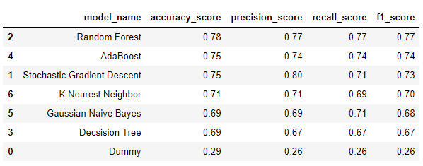
随机森林的F1得分最高（.77），其次是AdaBoost（.74）和SGD（.73）。为了简洁起见，我将仅继续使用两个分类器，即Random Forest和SGD，它们实现了逻辑回归。我发现具有逻辑回归的SGD对于文本分类非常有效，因为它可以像处理文本一样处理稀疏数据。
梯度下降的目的是找到最佳参数以优化给定函数。在我们的情况下，这就是我们试图找出局部最小值的损失函数。它通过采取与函数梯度的负值成比例的步骤来迭代地执行此操作。不利的一面是必须为训练集中的每个数据点计算梯度，这可能是一个问题。如果我们有大量数据，则可能无法容纳到内存中。
一种解决方案是随机梯度下降，它不计算真实的梯度下降，而是从训练集中选择一个随机示例。经过几次这样的处理并经过改组后的数据，该算法可以收敛得更快，更准确，并且数据可以安全地放入内存中。
学习速率是调整随机梯度下降的最重要参数之一。学习速率本质上是算法在局部最小值方向上占用的“步长”。如果步幅太大，则可以通过不断地从凸函数的每一侧“跳过它”来错过局部最小值。如果步长太小，则可能需要很长时间才能找到局部最小值。这是一个很好的视觉示例：
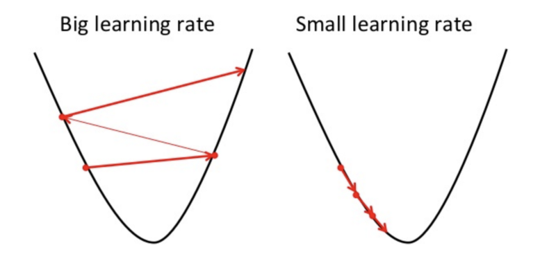Source
随机森林是一种综合方法，可训练一堆决策树（因此称为“森林”），以尝试与决策树容易出现的过拟合问题作斗争。它通过平均不同决策树的预测来做到这一点，这可以减少方差。调整模型的全部目的是在偏差和方差之间找到最佳平衡。
首先需要进行一些重要参数的调整（例如，RF的最大深度）（最大深度（树越深，越容易过度拟合，太浅并且将无法拟合）），估计器或树的数量（越多越好，但它取决于花费大量的计算时间，并且存在收益递减的问题）和最大要素（太多要素将导致过度拟合，一个好的起点是要素总数的平方根）。
超参数调谐¶
我通常要做的下一步是为要探索的分类器调整超参数。请记住，我们只是在初始评估中使用默认参数，因此它们并未尽其所能。 就超参数调整而言，这本身又是一个完整的主题，但基本上，您只想搜索一个可用的不同超参数值的体面表示形式，以查看哪种方法最有效。我将使用sklearn的gridsearch进行k折交叉验证。
在k折交叉验证中，数据被分成k折（通常我将使用5折）。数据的5个分割中的1个用于测试，其他4个用于训练。这会发生k次，每次使用不同的倍数作为测试集等。然后对结果取平均值。Gridsearch会简单地检查您给它提供的每个超参数的所有值的所有可能组合，并根据得分返回最佳组合。
我会在这里作弊，因为这可能会花费很长时间，尤其是在您刚开始的时候。进行一些调整后，您将了解哪些超参数确实可以根据数据集真正改善您的模型。 为了作弊，我将使用DataLab，它是一个jupyter笔记本，位于Google云平台上的虚拟机上。我将使用96个虚拟cpus，它可以使速度大大提高
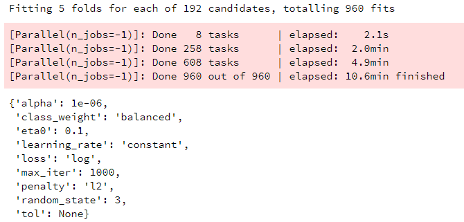SGD
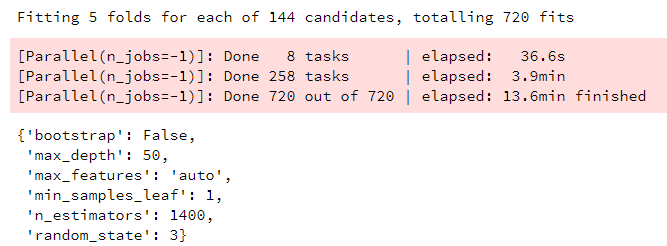RF
目前，我在生产中使用SGD作为文本分类器，因此我率先开始使用哪种超参数效果最好，并且这些值接近于我正在使用的参数，因此绝对是一个很好的起点。
第二次评估¶
现在，对于每个模型我们都有最好的超参数，让我们看看它们的性能。以下是SGD的ROC曲线，包括微观平均值和宏观平均值以及每个类别：
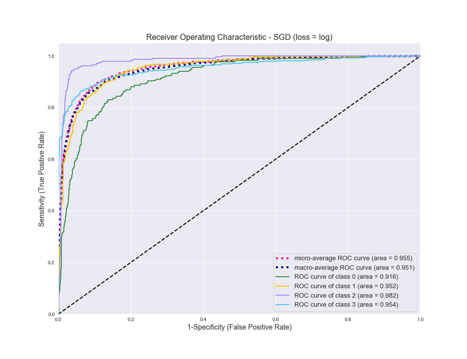
越靠近左侧，分类器的性能越好，因此总体而言，它做得很好。您会看到它在商务类0（绿色）方面挣扎，而在体育类2中则表现最好。现在对于RF相同：
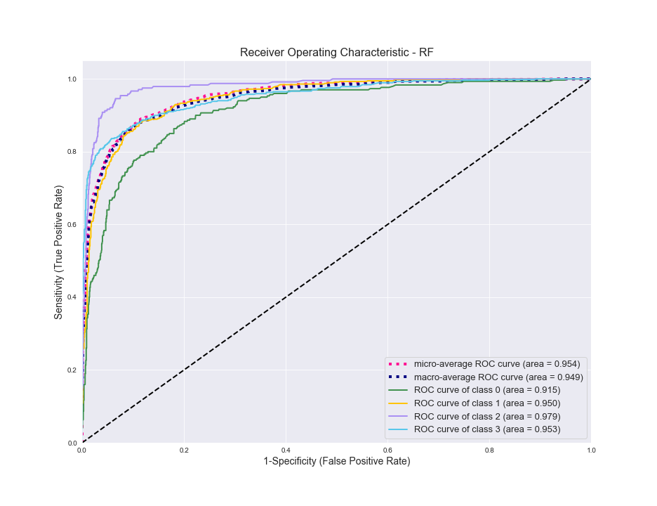
同样的故事。调整两个模型后，它们在测试数据上的表现几乎完全相同。
接下来，我想看看混淆矩阵，以了解分类器在哪里混淆（混淆）类别。SGD的第一个：
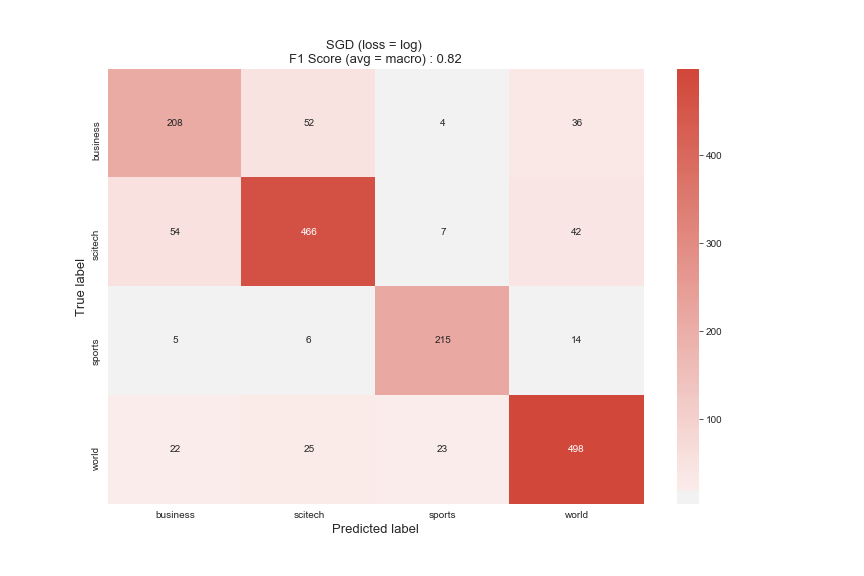
您可以看到，调整后顶部的F1分数从.73增加到.82，这是一个很好的提高。在ROC曲线中，我们看到“业务”是它最苦恼的类别。看起来它与SciTech文章最容易混淆，而与Sports完全没有。一般来说，体育是分类器最容易处理的，这并不奇怪，因为它与其他分类器最不同。
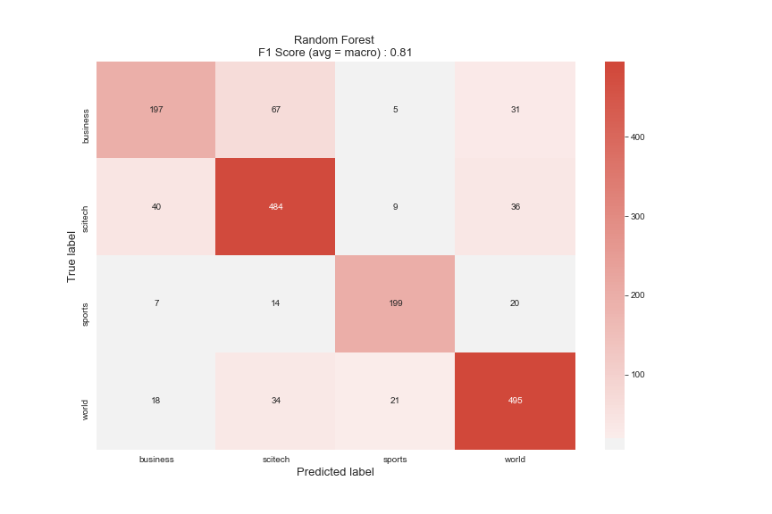
对于RF来说，这是一个类似的故事，因此我们知道，这最容易使Business与SciTech混淆。尽管“体育”的样本最少，但由于内容差异很大，因此最容易区分。
预测¶
因此，现在我们终于可以为最后一步做准备了，预测！令人兴奋！我将评估我们选择的模型并使用他们之前从未见过的数据进行调整，以了解它们的性能。
以下是我们一开始就从每个类别中获得的5篇文章，以及在正确的班级上对整个数据集进行训练的模型的预测。
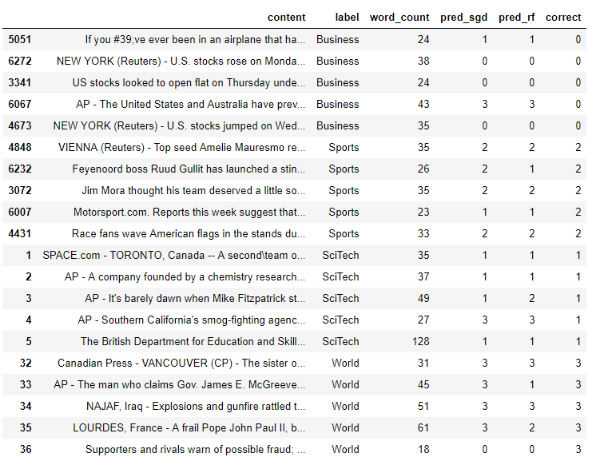
SGD的性能更好，准确度为75％，与测试一致，而RF的准确度仅为55％，因此确实看起来RF过度拟合了数据。您可以采取一些措施来避免这种情况，例如控制森林中树木的复杂性，或者在树木生长过多时进行修剪。
请记住，我们对“商业和体育”类别进行了抽样，以创建不平衡的类别。如果您不这样做，则下面是这些代码的执行方式：
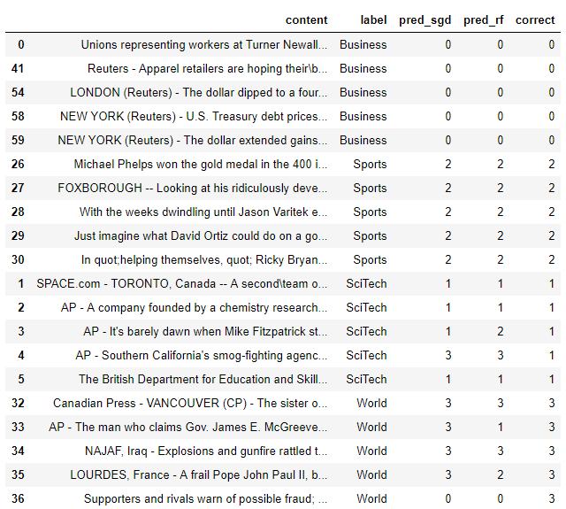
SGD对看不见的物品的准确性提高到90％，非常好，RF增加到75％。如您所见，收集更多的训练数据是提高性能（达到特定点）的好方法。但这并不总是可能的。
下一步¶
那么，如果您不能增加训练集的规模，该怎么做才能提高性能呢？在任何情况下通常都会有一些事情是：
- 尝试一些不同的模型 - AdaBoost和K-NN一样也是一个很好的选择。他们开箱即用的表现不错，一旦调音可能会表现得更好。我们也没有研究任何可能会或可能不会改善性能但值得一试的神经网络。对于像文本分类这样的事情，由于增加了培训时间，增加了gpu的成本/需求等，我肯定会在尝试深度学习之前先尝试更多传统算法。
- 尝试不同的功能 - 我们使用tf-idf从单词中创建了功能，但是有些功能已经成功嵌入了单词（Word2vec或GloVe），因此您可以尝试一下。甚至可以尝试计数矢量化器
- 尝试并补充其他功能 - 除了文章的实际文本之外，有时您还会有其他数据，例如作者或出版物，可以为您提供帮助。如果有标题的话，将标题添加到文章的正文中也可以提高性能，因为它通常具有很多相关的信息
- Gridsearch的处理和降维 - 我们根本没有调整它们，因此也可以帮助提高性能
凡本网注明"来源：XXX "的文/图/视频等稿件，本网转载出于传递更多信息之目的，并不意味着赞同其观点或证实其内容的真实性。如涉及作品内容、版权和其它问题，请与本网联系，我们将在第一时间删除内容！
作者: Rob Salgado
来源： https://medium.com/@robert.salgado/multiclass-text-classification-from-start-to-finish-f616a8642538